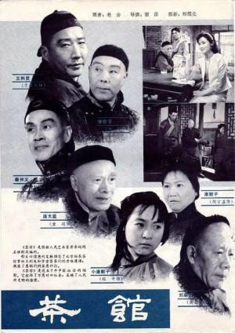
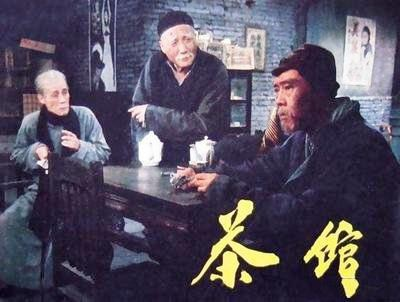
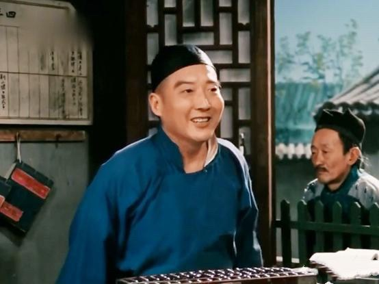
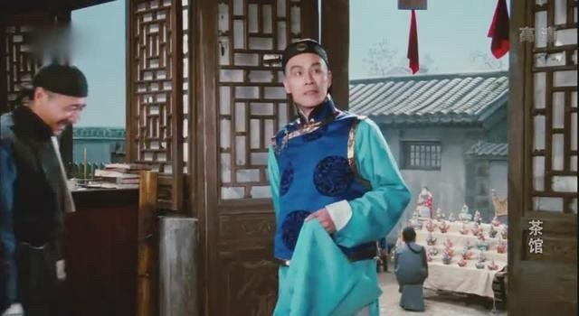
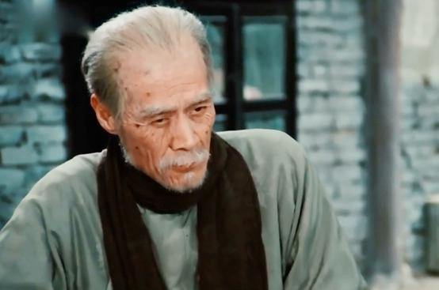
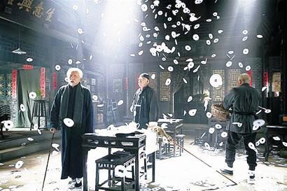

中國 - 茶舘
「茶館」是中國大陸1982年拍的電影，以作家「老舍」的劇本改編而成，由謝添導演，北京電影製片廠出品。曾獲1982年中國文化部優秀影片特別獎和1983年中國電影金雞獎特別獎。故事從北京一個名叫「裕泰茶館」王掌櫃為主軸，配合他兩位好友（常四爺、秦二爺）經歷，與其他相關角色，分別敘述三個時間點的變化，首先是從前清光緒二十四年（1898年）「戊戌事變」爆發，王掌櫃掌理裕泰茶館開始，其後歷經清朝結束民國成立、軍閥混戰、外國勢力壓迫下的眾生相，而後跳到抗戰勝利後的國共內戰時期。以一堆小市民的悲慘生活，襯托出「舊時代」的殘酷與不合理。目的只有一個，就是指向「必須革命」、「必須推翻舊社會」。簡言之，就是替當年共產黨的革命，提供順天應人的正當性。
此部「左傾電影」當年不可能在台灣上映，因為在這部影片中，國民黨是「壞人」（負面形象），而在當年國民黨主政下的台灣，「國民黨是好人」，兩者黑白分明，互相對立。目前兩岸已不像當年那麼隔絕，資訊也較為公開，應該讓兩岸的人民有很好的機會來作「歷史的評判」。
本片中的主要角色作簡介。
王利發（于是之飾演）
裕泰茶館的掌櫃，為人週到，辦事精明。配合時代轉變，他只想好好「活下去」（老百姓最基本的要求），想讓茶館維持經營，例如與各路人馬保持良好關係，買留聲機、設評書、甚至準備聘女招待等，用盡方法，也看盡茶客們的滄桑。最後，茶館還是被侵吞，他也走上自我了斷。
秦二爺（藍天野飾演）
裕泰茶館的房東，頗有家產，但懷著「實業救國」的宏願，變賣家產，開設工廠，一心求富國裕民，然而却遭帝國主義壓制，以及無良政府以「逆產」名義沒收。到老時一事無成、兩手空空。
常四爺（鄭榕飾演）
旗人，是裕泰茶館常客，個性正直，敢說真話，看到清朝末年亂象，說了句「大清將亡」，被官府特務抓去坐牢一年多。他也曾參加義和團，是主張個人報效國家的代表。民國成立後，靠賣花生仁渡日，一生只盼望國家能像個樣，中國人不受外國人欺侮。
松二爺（黃宗洛飾演）
常四爺的好友，亦為旗人，待人有禮和氣，膽小又愛說話，整天拿鳥籠泡茶館，清朝覆滅後，生活日益潦倒，最終衣食無著。
龐太監（童超飾演）
清宮總管太監，仇恨康梁變法與譚嗣同等，本人面目猙獰却要買年輕女子作老婆，雖然得意一時，最後却被晚輩們「餓死」。
康順子（胡宗溫飾演）
鄉下婦女，十五歲被人口販子賣給龐太監作老婆，受盡凌虐，龐死後，被掃地出門，帶著養子到裕泰茶館當幫工。
劉麻子（英若誠飾演）
人口販子，作事心狠手辣，唯利是圖，給康順子父親十兩銀子，却對龐太監要價兩百兩，貪婪無比，後來糊裡糊塗被當作逃兵處決。
小劉麻子（英若誠飾演）
劉麻子的兒子，為洋人作事，穿洋服說洋話，竟然子承父業，說要辦「大拖拉斯」，集合貧苦的中國婦女供洋人玩樂。後來勾結政府官員侵佔了裕泰茶館。
唐鐵嘴（張瞳飾演）
以算命為業，投機鑽營，騙吃騙喝，並且吸毒。其子小唐鐵嘴繼承父親坑矇拐騙本事，妄想成為天師。
二德子（李源飾演）
在清軍營當差，霸道、逞兇，一副地痞流氓相。其子小二德子是政府所僱打手，專門打支援愛國運動的學生。
崔九峰（孫俊峰飾演）
他在片中自白「慚愧！慚愧！我作過國會議員，那真是作孽呀！革命有什麼用呢？不過自誤誤人而已，唉！我現在只能修持、懺悔！」，他在跟王掌櫃對話時，認為軍閥內戰，讓國家沒有指望，而，「指使軍閥內戰」的，就是「洋人」。
電影分別在上述「三個時期」，透過上述主要演員與其他角色，經由片中在茶館的對話或互動，充分顯示地痞流氓之橫行、軍警官員的貪污腐敗、帝國主義對中國的欺侮、軍閥混戰之可惡可悲、一般百姓生活之卑微與可憐等等，似乎也孕涵中國社會已面臨「非變不可」的臨界點。電影最後，是王掌櫃、秦二爺與常四爺三人回顧平生，相互唏噓，以常四爺檢拾積存的「紙錢」（冥幣），仿送葬隊伍邊走邊灑紙錢，而後依依話別。最後王掌櫃孤獨一人眼望屋中高點，手握毛巾，被解讀為將自行結束其辛苦但換來虛無的一生。
孫子附記
我對近代史有點心得。其實所謂「戊戌事變」，有人稱「戊戌政變」，應該說「戊戌變政」比較適當。當時面對國內外叢生問題，光緒帝不過想做些「制度」上的修正，但因為影響「既得利益集團」，這些「集團」用言語煽惑已歸政的慈禧太后重新出山，收回政權，把光緒軟禁，把幾個平常好講「時政」的抓起來「殺雞儆猴」（戊戌六君子），如此而已。但因為死刑在市場公開執行，所以給民眾很大震撼。兩年後，發生義和團之亂、八國聯軍侵華、辛丑和約大賠款等等，然後帝國主義在中國劃分勢力範圍、國將不國，然後辛亥革命民國成立；然後北洋政府主政，一直到袁世凱當大總統。 本片對「以上這一段歷史背景」，沒有交代。
影片內容跳到袁世凱死後的「軍閥混戰」，以及外國勢力的壓迫。然後對蔣介石的「國民革命軍北伐」、全國統一，一直到抗戰勝利為止，這一段歷史也不提。
然後，影片跳到抗戰結束的「國共內戰」，用國民黨「沒收老百姓財產」「軍隊霸道」等，把國民黨說成腐敗專橫的「暴政」，也孕涵「共產革命的正當性」。
其實，我要講句公道話，慈禧太后並沒有一般人講得那麼「壞」，清朝如果沒有她（她掌政四十七年），早就「亡」了（她會用人，平定清朝內亂，讓老百姓免受更多苦難）。清朝之亡，是亡在整個中國不爭氣。進入民國，袁世凱不但不是「壞人」，若非老袁「鎮得住」，整個中國早就分崩離析啦，他死後，軍閥混戰，這是老百姓受災受難的時期（也有少數軍閥是好人）。其後國民政府北伐全國統一，雖然仍有部分地區不聽命「中央」，但民國17年（精確一點是民國19年以後）以後的中國，所謂「黃金建國」期間，中國社會是有「契機」的。不旋踵「中日戰爭」爆發，又受到重大傷害，「慘勝」後，國共內戰又起⋯⋯
國共內戰，國民黨「輸了」，但是，憑良心說，國民黨「有共產黨宣傳的那麼壞嗎」？我不相信！我認為是「整個中國社會面臨極不合理的的狀況，而國民黨無能力解決」，從而相信「共產黨的口號」，用腳投票，選擇了共產黨。試舉一例，共產黨當年最響亮口號之一就是「窮人翻身」，當時全國大部分人都是「窮人」，這個口號有多吸引人呀！可是，「窮人」難道是「國民黨」的責任嗎？更進一步分析，國家連年戰亂，生產貿易兩無，誰來當家都嘛「窮」。你共產黨後來建國那十幾年，還不是「一窮二白」，甚至加上各種政治運動與大饑荒死了上千萬人。所以重點不在個別政黨或個人，如果「整個社會不爭氣，窮人翻身後，還是窮呀」。
我認為可以說「國民黨無能」，但不是「壞」（講這些，國民黨也不會感謝我）。這個黨來台灣後，一度很有「能」，後來又「無能」了，為什麼？大家可以好好思考！
還是講回「茶館」本身。片中的秦二爺想要「實業救國」，沒有結果；常四爺個人赤忱愛國，甚至參加義和團，一心想讓自己的國家不受欺侮，也沒有結果。反而是，原來那些地痞流氓貪官污吏的「下一代」繼續為非作歹。這告訴觀眾什麼「啟示」？簡言之，一個國家的「文明開化」（進步）並不能僅靠政黨、政治人物或少數社會賢達、菁英分子，必須整個國家的大多數成員「文明開化」，而後整個社會才可能「文明開化」。至於如何去改變？當然是要靠「教育」，而這教育係包括家庭、學校與社會均應兼籌並顧，並且，還需要幾十年甚至上百年的沉澱、累積、發酵，才有具體效果。
這部電影是根據「老舍」劇本改編的，「老舍」原名舒慶春，滿族，他和當年許多「文藝工作者」都有種「傾向」，認為「社會不公平」，「需要改革」，這類人被親共的人說是「進步人士」，而國民黨當局稱其為「左傾反動分子」。諷刺的是，中共建政後，這批人應該「大紅大紫」呀！然而，老舍竟然在1966年文化大革命時期，被紅衛兵拘捕、迫其下跪受審、毆打、侮辱，被加上「走資派」、「反動文人」、「牛鬼蛇神」的罪名，老舍受不了，投湖自殺。像這樣的「運動」（文化大革命），這絕對不是那一個個人或團體的「責任」，我認為就是「民粹」，為什麼會有「民粹」，我認為就是整個社會不夠「文明開化」！至於，要如何避免「民粹」？這個題目就更大了，改天我們再談吧！
相關網站
評分： ⭐️⭐️⭐️⭐️💥 9.3分影評      